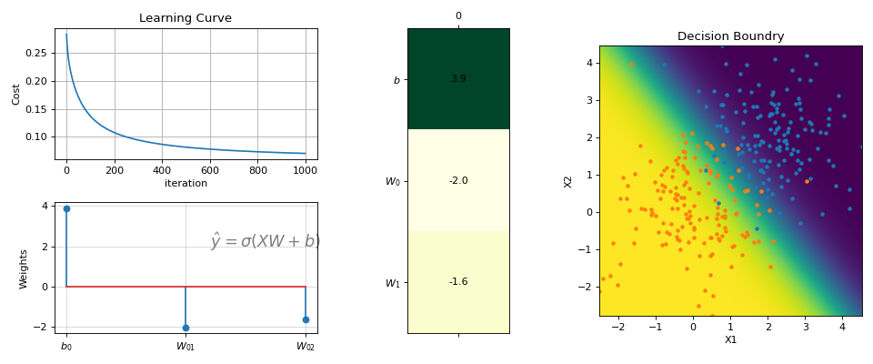

#sp.ml.LogisticRegressionimportnumpyasnpimportmatplotlib.pyplotaspltimportspkitasspfromspkit.mlimportLogisticRegression#--------------- Binary Class ------N=300np.random.seed(1)X=np.random.randn(N,2)y=np.random.randint(0,2,N)y.sort()X[y==0,:]+=2# just creating classes a little farprint(X.shape,y.shape)#(300, 2) (300,)model=LogisticRegression(alpha=0.1)model.fit(X,y,max_itr=1000)yp=model.predict(X)ypr=model.predict_proba(X)print('Accuracy : ',np.mean(yp==y))print('Loss : ',model.Loss(y,ypr))#Accuracy : 0.96#Loss : 0.07046678918014998fig=plt.figure(figsize=(12,5))gs=fig.add_gridspec(2,3)ax1=fig.add_subplot(gs[0,0])ax2=fig.add_subplot(gs[1,0])ax3=fig.add_subplot(gs[:,1])ax4=fig.add_subplot(gs[:,2])model.plot_Lcurve(ax=ax1)model.plot_weights(ax=ax2)model.plot_weights2(ax=ax3)model.plot_boundries(X,y,alphaP=1,ax=ax4)plt.tight_layout()plt.show()

# ------- Multi Class ------N=300X=np.random.randn(N,2)y=np.random.randint(0,3,N)y.sort()X[y==0,1]+=3X[y==2,0]-=3print(X.shape,y.shape)#(300, 2) (300,)model=LogisticRegression(alpha=0.1,polyfit=True,degree=3,lambd=0,FeatureNormalize=True)model.fit(X,y,max_itr=1000)yp=model.predict(X)ypr=model.predict_proba(X)print('Accuracy : ',np.mean(yp==y))print('Loss : ',model.Loss(model.oneHot(y),ypr))#Accuracy : 0.8833333333333333#Loss : 0.08365012491975303fig=plt.figure(figsize=(12,5))gs=fig.add_gridspec(2,3)ax1=fig.add_subplot(gs[0,0])ax2=fig.add_subplot(gs[1,0])ax3=fig.add_subplot(gs[:,1])ax4=fig.add_subplot(gs[:,2])model.plot_Lcurve(ax=ax1)model.plot_weights(ax=ax2)model.plot_weights2(ax=ax3)model.plot_boundries(X,y,alphaP=1,ax=ax4)plt.tight_layout()plt.show()